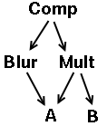
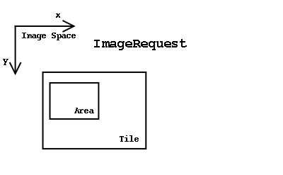

Gegl Classes
Calvin Williamson
- These classes currently have implementations in gegl:
GeglObject
GeglNode
GeglImage
GeglImageBuffer
GeglOp
GeglPointOp
GeglSingleSrcOp
GeglFillOp
GeglPrintOp
GeglPremultOp
GeglUnpremultOp
GeglColorConvertOp
GeglColorConvertToRgbOp
GeglColorConvertToGrayOp
GeglCopyOp
GeglCopyChanOp
GeglDualSrcOp
GeglAddOp
GeglDarkOp
GeglDiffOp
GeglLightOp
GeglMaxOp
GeglMinOp
GeglMultOp
GeglScreenOp
GeglSubtractOp
GeglCompositeOp
GeglCompositePremultOp
GeglColor
GeglColorModel
GeglColorModelRgb
GeglColorModelRgbU8
GeglColorModelRgbU16
GeglColorModelRgbFloat
GeglColorModelGray
GeglColorModelGrayU8
GeglColorModelGrayU16
GeglColorModelGrayFloat
GeglImageManager
GeglTileImageManagger
GeglTile
GeglTileIterator
GeglCache
GeglDataBuffer
GeglObject
This is the base class for gegl. It keeps track of some high level gegl info, and passes some calls on to Gtk/GObject. It has some reference counting debugging functions similar to those in Gtk/GObject. All gegl classes extend from this class.
GeglNode
The Node class manages adding and removing parents and children . It also has methods for traversing image graphs (breadth-first, depth-first), detecting cycles in graphs and topological sorting. Freeing a root node will free nodes that descend from the root when there are no other objects holding references to these nodes. When a node descends from more than one root (ie its part of two or more image graphs) it wont be deleted when a graph is deleted since its reference count will not be zero.
Heres a simple example of an image graph for Comp(Blur(A), Mult(A,B)) :

Here Comp (eg composite over) is the root node, A and B are
ImageBuffer leaf nodes, and Blur, Mult are nodes with both children and
parent(s). A is shared by the Blur and mult.
GeglImage
This class is the main base class for Ops and ImageBuffers. Common features of ops and image buffers are stored here. Images have the ability to "produce" outputs by operating on inputs and and placing the result in some buffer. Ops "produce" their output as a result of performing an image operation on inputs. ImageBuffers "produce" their output by just returning their normal image data as output.
The most important routine in Image is get_pixels, which is the routine which asks an Image to produce the output from its inputs, possibly placing the result in a passed destination buffer. get_pixels is also passed a region of interest (roi), which restricts image processing to an area. Calling get_pixels on the root of an image graph will result in processing the entire graph (in depth-first, or some other topological sort order). Images are processed from the leaves of the graph towards the root, with each node waiting until inputs are computed before computing its output. Once the inputs are finished the node performs its operation and places its result in a data buffer.
ImageBuffers are a special kind of Image. They have no inputs, and so are leaf nodes in image graphs. Ops are typically non-leaf nodes (but there are some Ops without inputs) and have one or more inputs.
The Image class also keeps information that makes image calculations more efficient. Domains of definitions (called have_rects) and regions of interest (called need_rects) are kept in this class. have_rects are defined for leaves and are passed towards the root, and need_rects are passed from the root towards the leaves. (See Shantzis for an explanation of these terms). In compiler speak, have_rects are synthesized attributes, and need_rects are inherited attributes.
Heres an example of setting up an operation (mult) and calling get_pixels :
GeglRect roi;
/* Get three ImageBuffers to use */
GeglImage *A = GEGL_IMAGE(gegl_image_buffer_new(color_model,w,h));
GeglImage *B = GEGL_IMAGE(gegl_image_buffer_new(color_model,w,h));
GeglImage *C = GEGL_IMAGE(gegl_image_buffer_new(color_model,w,h));
/* Set up
op
/ \
A B
*/
GeglImage * op = GEGL_IMAGE(gegl_mult_op_new
(A,B));
/* Call get_pixels to do the operation */
gegl_rect_set (&roi, 0,0,w,h);
gegl_image_get_pixels (op, C, &roi);
gegl_object_unref (GEGL_OBJECT(op));
gegl_object_unref (GEGL_OBJECT(A));
gegl_object_unref (GEGL_OBJECT(B));
GeglImageManager
This class handles details of computing the image graph. When Image's get_pixels is called, the Image retrieves the singleton ImageManager instance and calls the ImageManager get_pixels passing itself along as the root of the image graph. The ImageManager sets up the graph for traversal, fetches image data for each Op to use, and takes care of storing the results again somewhere once the Ops are finished. Separating the details of the graph traversal and data management from the Op's image processing lets us extend both parts. We can subclass ImageManager to provide different memory management schemes or arrange for data to be delivered to the Ops in different ways. For example, a TileImageManager would present requests to the Image in pages or Tiles of a certain size.
The ImageManager decides how to traverse the graph, and also if any preliminary passes over the graph are necessary. For example the TileImageManager computes the region of interest (or need_rect) and domains of definition (have_rects) on nodes in preliminary breadth-first and depth-first traversals. Also ColorModels and data types are derived on Images which do not have these explicitly set. Eventually the ImageManager calls all the nodes in the image graph (in Image's prepare ,apply, and finish routines) and passes image data for use as output and inputs. Finally after an operation for a node is complete the ImageManager decides what to do with the output. For example it could cache it in memory or swap it to disk.
Below is a picture of the Image and ImageManager classes. The design of the ImageManager is intended to follow the Bridge Pattern.(GoF Design Patterns)

The Image's prepare, apply, and finish routines all take a GList of ImageRequests. This list of ImageRequests tells the Image which areas on the inputs and output it will be processing and also which data buffers to use. The output is given first in the list, followed by any inputs. Each ImageRequest is made up of a region to use (Area) together with some image data (Tile) . The Tile corresponds to an area of image space and Area is the subportion of that Tile to use or process during the operation. Tiles used here are just thought of as "chunks of image data", and may be of any size. They might correspond to what is usually called "pages" or they might be the entire data of the Image. It depends on the way the ImageManager in question organizes things.
Here is a picture of an ImageRequest:

Note that Op nodes may receive ImageRequests that correspond to any area of its image space, and do not have an intrinsic width and height. So it is legal to ask an Op to compute its result anywhere in the plane. ImageBuffers, which correspond more to in-memory representations of image files, do have a width and height. Of course if the area you request is outside of the have_rects (domain of definitions) of the inputs to the Op then you will likely just get a zero-valued output.
GeglOp
The Ops are divided into four main subclasses. These classes arise from the way operators compute their outputs.
- PointOps are point processes. For these, the output pixel at (x,y) depends only on source input(s) at (x,y) .
- AreaOps are area operations. The result output (x,y) for these is determined by a fixed size area around the (x,y) of the sources. (convolutions, kernel operations).
- GeometricOps determine values at (x,y) based on some geometric transform or warp of inputs.
- StatisticsOps collect information about the image (histograms, means, etc).
Here's the implementation of apply in PointOp:
override (Gegl:Image)
void
apply(GeglImage *self_image,
GList *requests)
{
GeglImageRequest * request;
gint i,j;
gint width, height;
GeglPointOp *self = GEGL_POINT_OP(self_image);
GeglPointOpClass *self_class =
GEGL_POINT_OP_CLASS
(GTK_OBJECT(self_image)->klass);
GeglNode *self_node = GEGL_NODE(self_image);
gint num_inputs = gegl_node_num_inputs(self_node);
GeglTileIterator **iters = g_new (GeglTileIterator*,
num_inputs+1);
/* Get tile iterators for dest and sources.
*/
for (i = 0; i < num_inputs+1; i++)
{
request = (GeglImageRequest*)g_list_nth_data(requests,i);
/* Get the tile,
if it is not NULL */
if(request->tile)
{
iters[i] = gegl_tile_iterator_new (request->tile, &request->rect);
gegl_tile_iterator_first (iters[i]);
}
else
iters[i] = NULL;
}
/* Get the height and width of dest rect we
want to process */
request = (GeglImageRequest*)g_list_nth_data(requests,0);
width = request->rect.w;
height = request->rect.h;
/* Now iterate over the scanlines in the dest.
*/
for(j=0; j < height; j++)
{
/* Call the subclass
scanline func. */
(self_class->scanline_func)(self,
iters, width);
/* Advance all the
scanlines. */
for (i = 0; i <
num_inputs+1; i++)
{
if(iters[i])
gegl_tile_iterator_next(iters[i]);
}
}
/* Free the iterators */
for (i = 0; i < num_inputs+1; i++)
{
if (iters[i])
gegl_object_unref
(GEGL_OBJECT (iters[i]));
}
/* Free the array of iterator pointers */
g_free (iters);
}
The final code for implementations of specific image operators (eg in scanline_funcs) may be autogenerated by the code generator gil (currently codegen) based on the generic description of the algorithm, the color models, and the data types of the inputs and outputs. It should be possible to allow for "specialized" data types/color model algorithms that are not autogenerated in cases where finer tuning over optimization is desired, or where autogeneration is just impossible (like LUT operations on small bitdepth channels vs floating point channels)
ColorConvertOp is the base class for color model conversions. Every ColorConvertOp is a single source op that converts from the color model of the input source to the color model of the output buffer. Specific ColorConvertOps query the color model of the output for a converter function that can convert from the color model of the source to the color model of the output. When no converter is found, then a default conversion from the source to CIE_XYZ and from CIE_XYZ to the output color model is used. The actual color conversion routines are located in the ColorModel classes. When inputs and outputs have color models that are different, the ImageManager will automatically inserts whatever ColorConvertOps are necessary to bring inputs and their color models into sync with the output color model.
GeglImageBuffer
GeglTile
GeglDataBuffer
GeglColor
Heres the Color object:
typedef union
{
guint8 u8;
guint16 u16;
gfloat f;
}GeglChannelValue;
class Gegl:Color from Gegl:Object {
private GeglColorModel *color_model;
/* The color model */
private GeglChannelValue *channel_values;
/* components */
private gint num_channels;
/* number of channels*/
}
GeglColorModel
ColorModel and its subclasses describe the different color image data types. ColorModels have a ColorSpace, a ChannelDataType, and fields that describe the nunber of channels, bytes per channel, names of channels, presence of alpha channels, and color conversion routines.The ColorSpace corresponds to spaces like RGB, GRAY, CMYK, INDEXED, CIE_XYZ, CIE_LAB, sRGB, HSV etc. The data type of a color model corresponds to channel bitdepth. Color models can be defined in terms of ICC profiles, and corresponding subclasses of ColorModel may have ICC profile information where appropriate. The CIE_XYZ based color model is used as a profile connection space, and color models must implement mappings to and from this color model.
Corresponding to concrete subclasses of ColorModel (eg ColorModelRgb) are matching ColorConvertOps (eg ColorConvertToRgbOp) that handle the details of color conversion of images from any source color model to the specified one. Conversions between images whose color models are the same except for the channel data type (ie conversions between different bit-depths) are also handled by this color conversion operator. (eg conversion from rgb 8bit to rgb float)
examples:
Part of the (only partially implemented) color model tree:GeglColorModel
GeglColorModelIndexed
GeglColorModelIndexedU8
GeglColorModelGray
GeglColorModelU8Gray
GeglColorModelU16Gray
GeglColorModelFloatGray
GeglColorModelRgb
GeglColorModelU8Rgb
GeglColorModelU16Rgb
GeglColorModelFloatRgb
GeglColorModelCmyk
GeglColorModelU8Cmyk
GeglColorModelU16Cmyk
GeglColorModelCieXyz
GeglColorModelU8CieXyz
GeglColorModelU16CieXyz
GeglColorModelsRgb
GeglColorModelU8sRgb
GeglColorModelHsv
GeglColorModelU8Hsv
GeglColorModelMultiChannel
GeglColorModelFloatMultiChannel
The matching Color conversion operators:
GeglColorConvertOp
GeglColorConvertOpToIndexed
GeglColorConvertOpToGray
GeglColorConvertOpToRgb
GeglColorConvertOpToCmyk
GeglColorConvertOpToCieXyz
GeglColorConvertOpTosRgb
GeglColorConvertOpToHsv
The basic formula for Blend modes (including Porter-Duff compositing) are as follows
Let the images be given by (A,aA) (B,aB) (C,aC) all premultiplied. Then:
aC * C = (1-aB) * aA * A + (1-aA) * aB * B + aA * aB * f(A,B)
aC = aA + aB - aA * aB
Mode f(A,B)
1)Normal B
2)Multiply A*B
3)Screen 1-(1-A)*(1-B)
4)Overlay 2*A*B
A<.5
1-2*(1-A)*(1-B) A>=.5
5)HardLight 2*A*B
B<.5
1-2*(1-A)*(1-B) B>=.5
6)SoftLight 2*remap(A,.25,.75)*B
B<.5
1-2*(1-remap(A,.25,.75))(1-B) B>=.5
7)ColorDodge 0
A=0
1
A>=(1-B)
A/(1-B)
8)ColorBurn 1
A=0
0
(1-A)>=B
1 - (1-A)/B
9)Darken min(A,B)
10)Lighten max(A,B)
11)Difference |A-B|
Some of these might not be quite right (eg SoftLight). Compare versions from recent Ghostscript cvs here. Also compare the descriptions in Adobe PDF spec, and the SVG spec as well.